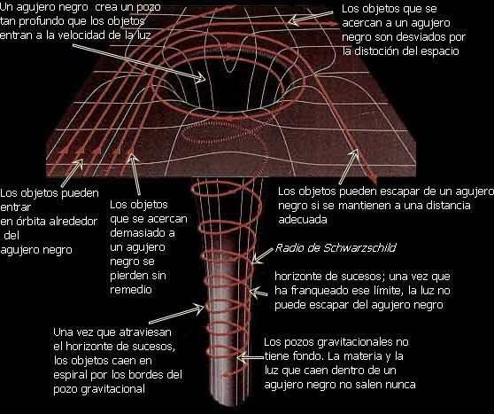

| EL HORIZONTE DE SUCESOS COMO FRONTERA TEMPORAL | ||||
| Inicio Investigación El horizonte de sucesos como frontera temporal Intercambio del espacio-tiempo | El punto donde el tiempo parece detenerse | |||
GaleríaImágenes del horizonte de eventos y la curvatura extrema del espacio-tiempo.  |
PUBLICIDAD | PUBLICIDAD | ||
Contenido principalEl horizonte de sucesos es el límite alrededor de un agujero negro a partir del cual nada puede escapar, ni siquiera la luz. Este límite no solo es físico, sino también una frontera temporal. Para un observador lejano, cualquier objeto que se acerque al horizonte parece moverse cada vez más lento, hasta parecer congelado en el tiempo. Esto ocurre debido a la intensa gravedad que ralentiza el paso del tiempo. Sin embargo, para el objeto que cae, el tiempo continúa normalmente y cruza el horizonte sin notar un cambio inmediato. Esta diferencia muestra cómo el tiempo depende del observador. |
VideoExplicación del horizonte de sucesos |
|||
|
Dato 1 Marca el punto sin retorno. |
Dato 2 El tiempo se ralentiza al acercarse. |
Dato 3 Ni la luz puede escapar. |
Dato 4 Depende del observador. |
|
| © 2026 - Karla Rubí | ||||